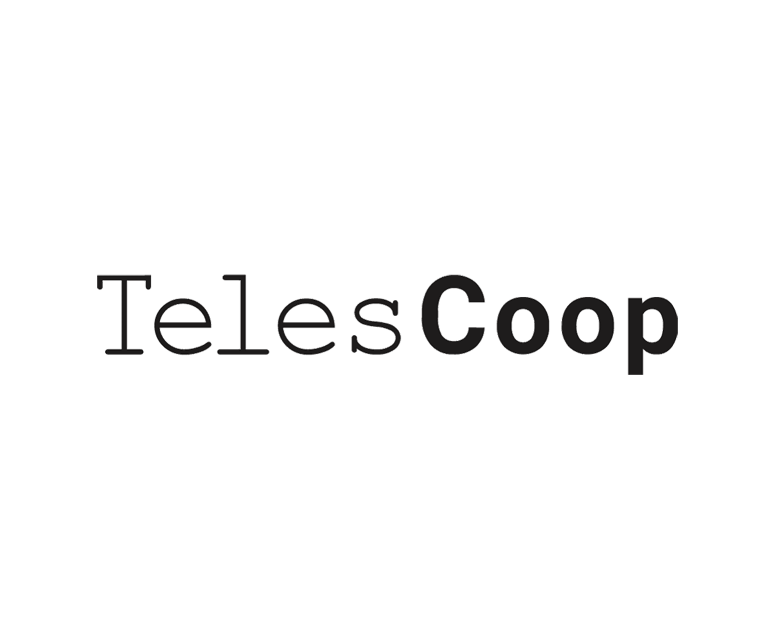
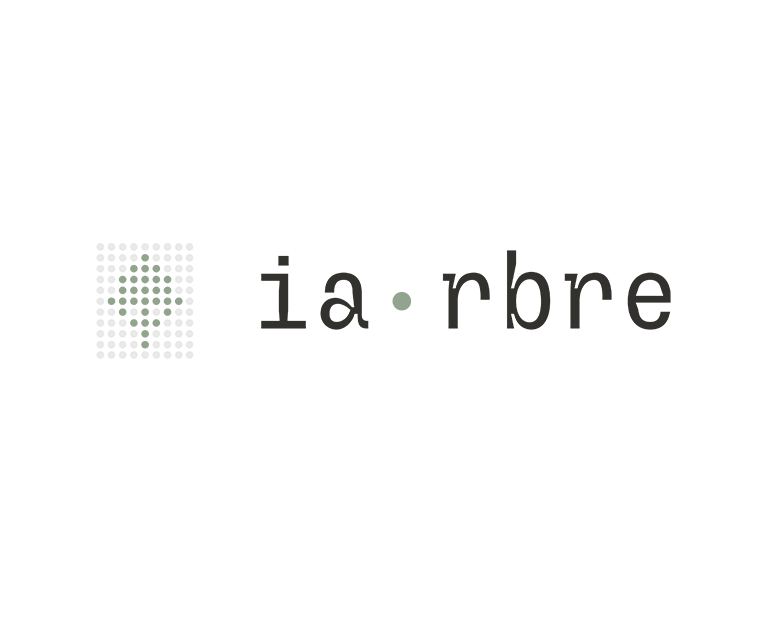
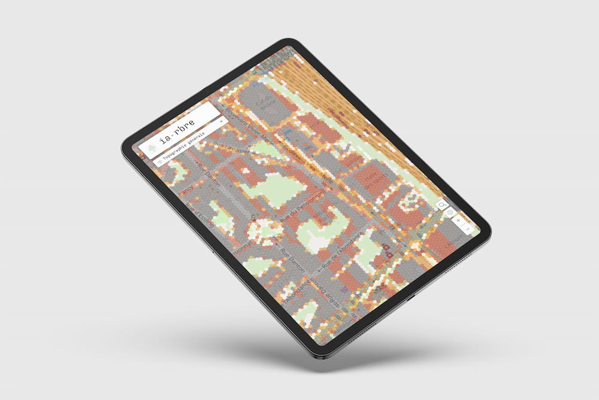
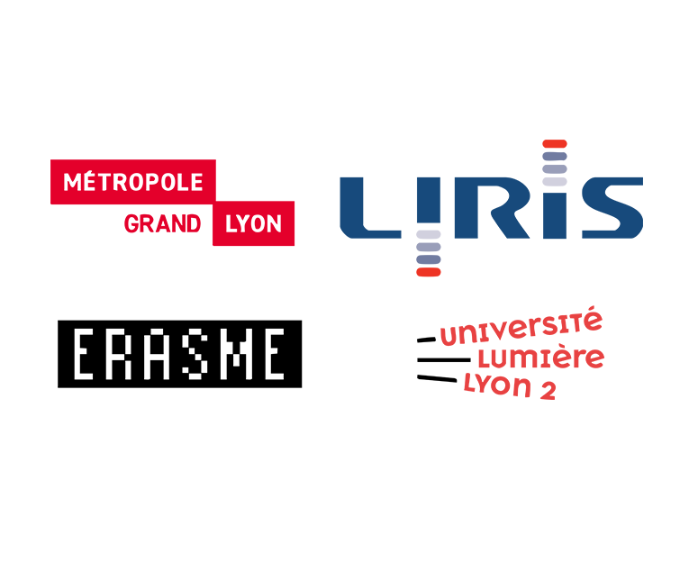

— Enraciner la résilience climatique des territoires en cultivant les
données.

— Fondée en 2020,
TelesCoop
est une société coopérative spécialisée dans
l’accompagnement et le développement de
sites web, d’outils métier et
d’applications basés principalement sur des
technologies open-source. Nous sommes
expert·e·s en développement web,
en projets data et en
intelligence artificielle.
Unis et engagés autour de valeurs communes –
écologie, justice sociale,
sobriété – nous mettons en commun nos expériences
individuelles au service d'un projet collectif.

— Le projet IA.rbre est une initiative
collaborative dédiée à la transition écologique de la Métropole de
Lyon, soutenue par un consortium comprenant la SCOP TelesCoop et
le laboratoire Univ-Lyon2/CNRS LIRIS.
En s’appuyant sur des compétences variées, ce projet vise à
co-développer des outils innovants de gestion et de visualisation
de données territoriales pour favoriser
la résilience urbaine. S'étalant sur trois ans,
IA.rbre bénéficie d'un financement de la Caisse des Dépôts,
garantissant les ressources pour atteindre ses ambitions.
Le projet se distingue par son approche d'intelligence artificielle frugale et responsable, favorisant des analyses multicritères grâce à des calques
thématiques (plantabilité, désimperméabilisation, etc.) et une
plateforme de visualisation interservices.
Les outils développés permettent une meilleure
allocation des ressources publiques et un suivi précis de l'impact
des actions urbaines, soutenant les objectifs de durabilité du
territoire.


— Le consortium IA.rbre vise à développer des
outils pour la végétalisation et l’adaptation au changement climatique, en collaboration avec la
Métropole de Lyon, le
laboratoire LIRIS
et d'autres partenaires. Le laboratoire
Erasme
joue un rôle clé en coordonnant des projets de
co-développement pour pérenniser et généraliser
les innovations publiques.
Ces outils permettent une meilleure analyse et
visualisation des données, répondant aux enjeux
de résilience urbaine. Le projet reflète une
dynamique collective d'innovation ouverte et
d’adaptation aux politiques publiques complexes.
Pour suivre l’évolution du projet et participer aux discussions,
inscrivez-vous aux actualités !
#France2030 est un plan ambitieux doté de 54 milliards d’euros
visant à transformer durablement les secteurs clés de l’économie
française par l’innovation, en soutenant des projets décarbonés et
portés par des acteurs émergents pour positionner la France comme
leader mondial des technologies et industries du futur.